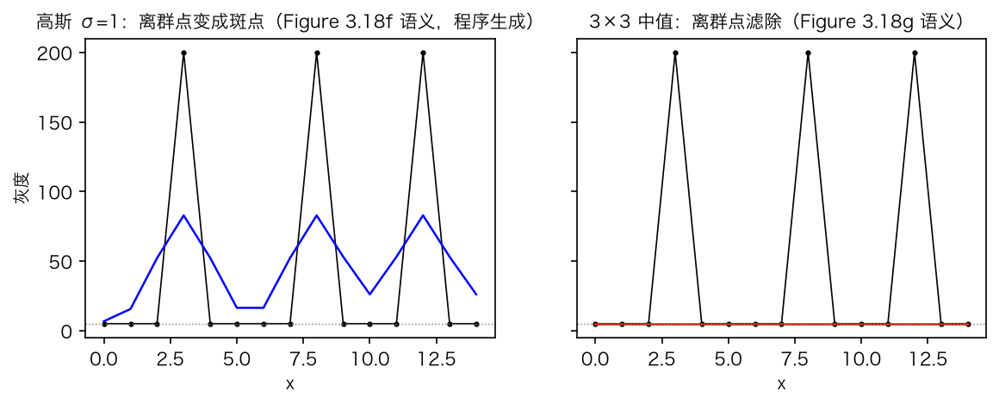
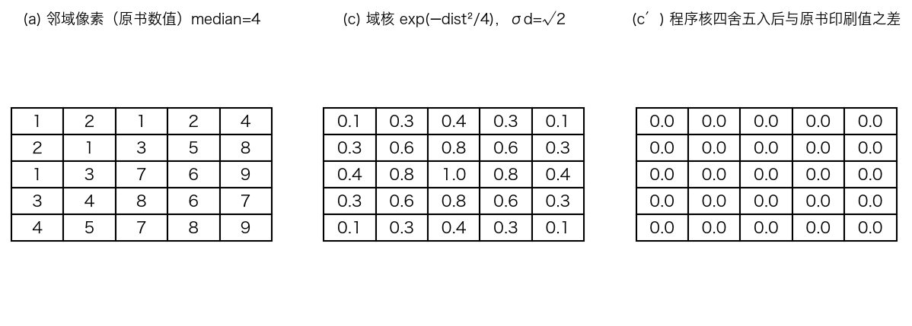
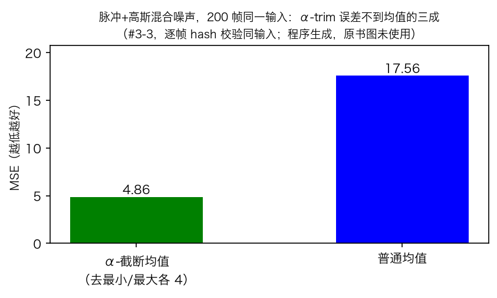
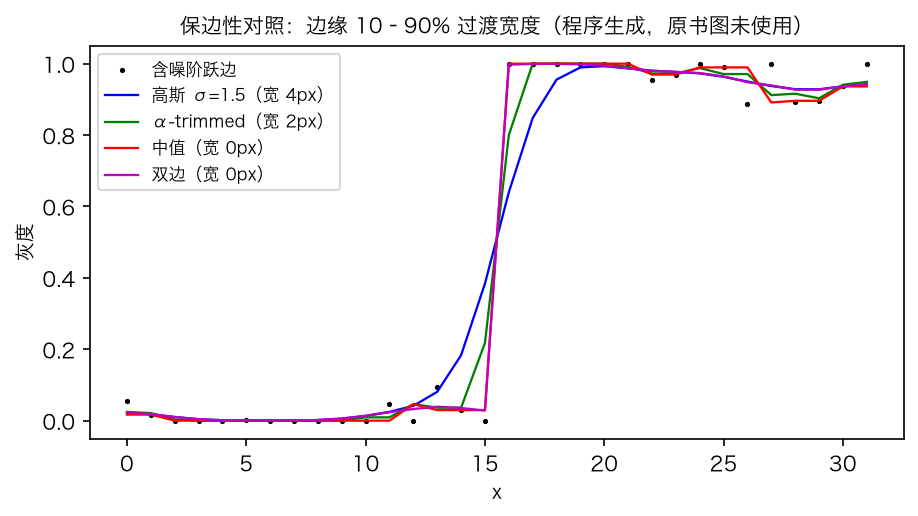
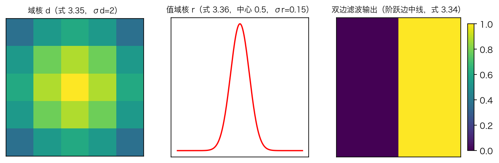
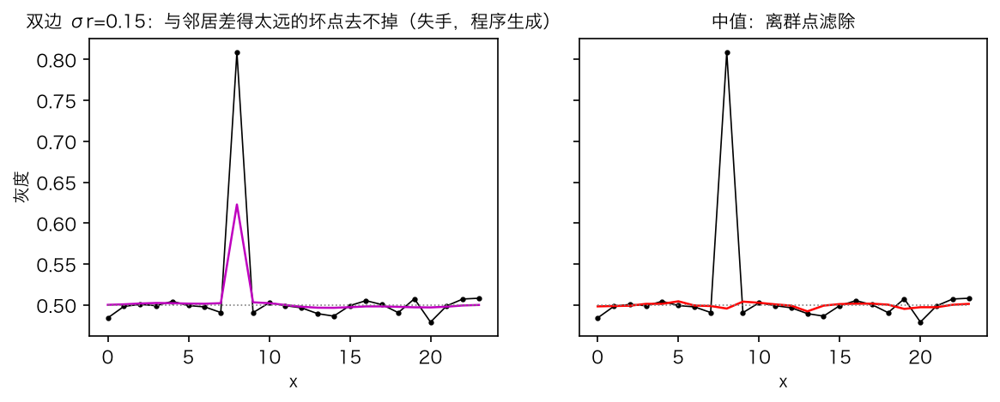
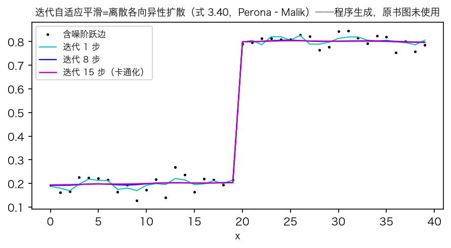

第 3 章 · 图像处理
非线性登场：中值滤波与双边滤波
上一集预告两件事：非线性登场，双边也会失手。
中值滤波：按大小排序，取中间那个值。
α-截断均值与加权中值：两种折中。
双边滤波：空间距离乘灰度相似度。
依据：原书第 131–137 页
本集路线
中值：排序取中间
α-截断：去两端再平均
双边：两个核相乘
迭代与引导：两个变奏
正课第十七集
01 / 11
第 3 章 · 线性之外
线性之外：中值滤波登场
线性滤波：输出是输入像素的加权和。
脉冲噪声：偶尔出现特别大的值。
高斯模糊去不掉，还把坏点摊成斑。
中值滤波：排序后取中间，坏点被扔掉。
依据：原书第 131–132 页；本集实验

脉冲噪声：中值残差 0.00，高斯 77.8｜程序生成，未用教材或论文原图
正课第十七集
02 / 11
第 3 章 · 中值的算法
中值：25 个数取第 13 位
5×5 邻域，25 个数排成一列。
第 13 位是 4，替换中心像素。
成本中等：随机化选择期望线性时间。
还有与窗口大小无关的常数时间算法。
依据：原书第 132 页

原书图 3.19 数值例：中位数 4，域核网格逐位一致｜程序生成，未用教材或论文原图
正课第十七集
03 / 11
第 3 章 · 中值的短板
中值不擅高斯噪声，α-截断来折中
中值只挑一个值，等于不做平均。
纯高斯噪声：均值 12.63，中值 18.88。
α-截断均值：去掉两端各 α 比例再平均。
同一输入：α-trim 4.86，均值 17.56。
依据：原书第 132–133 页；本集实验

同一输入：α-截断 4.86，均值 17.56｜程序生成，未用教材或论文原图
正课第十七集
04 / 11
第 3 章 · 加权中值
第三条路：加权中值
每个像素按离中心远近使用不同次数。
式 3.33：让带权绝对偏差之和最小。
p=1 是加权中值，p=2 回到加权均值。
归一后就是式 3.12 的滑窗相关。
依据：原书第 133 页
min
g
Σ w(k,l)·|f − g|
p
p=1：加权中值；p=2：加权均值（按权重和归一后为式 3.12 的相关）
正课第十七集
05 / 11
第 3 章 · 保边
更重要的性质：保边
高斯压噪声，同时抹掉高频细节。
中值保边更好，平坦区压噪声不如平均。
α-截断与加权中值容易把尖角抹圆。
阶跃边带宽：高斯 4，α-trim 2，中值/双边 0 px。
依据：原书第 133 页；本集实验

阶跃边过渡带宽：高斯 4、α-trim 2、中值/双边 0 px｜程序生成，未用教材或论文原图
正课第十七集
06 / 11
第 3 章 · 双边滤波
双边滤波：两个核相乘
不用固定比例砍，按灰度差软拒绝。
式 3.34：加权和除以权重和。
域核式 3.35 看空间距离。
值域核式 3.36 看灰度差，式 3.37 相乘。
依据：原书第 133–134 页

域核、值域核与双边输出：边缘两侧各自平滑｜程序生成，未用教材或论文原图
正课第十七集
07 / 11
第 3 章 · 算成数字
域核网格与两个极限
原书域核网格：1、0.8、0.6、0.4、0.3、0.1。
反推 sigma d=√2，一位小数逐位一致。
sigma r 拉宽到无穷，双边退化成高斯。
常数图输入，输出仍是常数图。
依据：原书第 132、134–135 页；本集实验
域核数值例：exp(−dist²/4) 与原书网格逐位一致｜程序生成，未用教材或论文原图
正课第十七集
08 / 11
第 3 章 · 双边失手
双边也有去不掉的坏点
坏点跟邻居差得太远，值域权重被压低。
坏点高出 0.3：两处各留约四成。
合计残差 0.2391，中值 0.0112，差 21 倍。
彩色图用向量距离，减轻彩色镶边。
依据：原书第 131、134 页；本集实验

双边失手：两处合计残差 0.2391，中值 0.0112｜程序生成，未用教材或论文原图
正课第十七集
09 / 11
第 3 章 · 迭代平滑
迭代双边就是各向异性扩散
式 3.40：用四个邻居做递推。
Barash：这就是 Perona–Malik 扩散。
迭代 15 步：边缘带宽 0–1 px，高斯 2→8 px。
没有偏置项，最终收敛成常数图。
依据：原书第 134–136 页；本集实验

迭代 1、8、15 步：边缘不扩张，平台噪声压平｜程序生成，未用教材或论文原图
正课第十七集
10 / 11
第 3 章 · 引导滤波与收束
引导滤波，和下集预告
引导滤波：权重从另一张引导图算。
He 等 2013：局部仿射，归结为岭回归。
中值排序去离群，双边两核保边。
下集：二值图像、形态学、距离变换。
依据：原书第 136–138 页
三句话
中值：排序取中间
双边：空间核×值域核
迭代：无偏置收敛常数图
正课第十七集
11 / 11